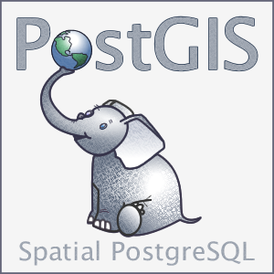

Experience in Geographical Information Systems, if I can solve it in the linux console that's my preferred solution. I lean to open-source tools with bash, python, and QGIS. I can also use ArcGIS, ArcPro, Terrset, SNAP Toolbox, ENVI, FML & PostGIS (PostgreSQL).


I employ Python for programmatically solving tedious and repetitive tasks, also data visualization.
I can write in Python, JavaSript, and R. And apply extract, transform and load (ETL), object-oriented programming, and data science concepts.
I've employed: Numpy, Pandas, Geopandas, Scipy, ArcPy, geopandas, shapely, GDAL, and OSR. Also Rstudio & Matlab and Keras, Tensorflow, and Pytorch to a lesser extent. I also get my way around spreadsheets.
Master's Thesis: “Monitoring wetlands in Sweden using multi-source satellite data and machine learning algorithms”
I developed a whole pipeline workflow for classifying wetlands all over Sweden, using Google Earth Engine (GEE), in Javascript.
Gathering multi-source multi-temporal imagery, from Sentinel-1 and Sentinel-2 satellites, and combining it with topographical data.
Applying a Machine Learning Random Forests classifier.

Project: Horizon Angles (ArcGIS Toolbox)
I developed a script that calculates the maximum angular obstruction for each cell on a raster, particularly from a digital elevation model (DEM), recreating functions from GRASS GIS and GDAL, it combines ArcPy. The project required the design of a graphic user interface (GUI) allowing to easily parse parameters between ArcGIS and Python. Available on Github.


Project: The prospects of coffee cultivation in South America in a future climate
I developed a group of Python scripts for classifying The Earth's climate zones based on Köppen-Gauger method, averaging NC files in climate normals for global temperature and precipitation from several CMIP6 experiments: historical and Representative Concentration Pathway 8.5(RCP) models. Available on Github.

My skills in GIS include:
Data Management & Harmonization
Digitization & georeferencing
Remote Sensing & Satellite Imagery
Spatial Databases (SQL & PostGIS)
Cartography
Geostatistics


Experience Web design and development using HTML, CSS, and JavaScript
Markup languages XML, KML, GML, and JSON
Housing Project
I developed a webmapping service for a Master's Programme project, using which could be used by any of the Housing Agencies in Lund; most lack this kind of feature. The whole project was made with dummy data.
Using OpenLayers, OpenStreet Map (OSM), and WMS requests to a GeoServer hosted in Lund's University.
For deploying the OpenLayers (OL) with ES6 JavaScript, I employed NPM.
CIAL School website
In 2014 I developed a schools website, and maintained it until 2019. Maintenance involved uploading relevant information, and answering to the contact e-mail.


Seismic processing and interpretation, Petrophysics & well logs.
Fuzzy Logic, Neural Networks & Deep learning algorithms for regression.
Bachelor's Thesis: “Vp logs prediction from well logs and seismic using ANFIS”
The goal was to infer sonic logs for 27 wells located in a productive basin in Venezuela, using fuzzy logic and neural networks combining radioactive and resistive logs, with different seismic attributes resampled and extracted from a seismic cube, as input for the neuro-fuzzy (machine learning) regressor. The generated maps showed the expected low p-wave velocity behavior for most of the geologic horizons around each currently active well. And the accuracies
For the project we employed OpendTect Neural Networks module, MATLAB ANFIS (Adaptative Neuro-Fuzzy Inference System) for training the fuzzy sets, SegyMat library for reading traces and Oasis Montaj for data management.



During my Master's I've hands-on learned and employed SQL (Structured Query Language), Spatial Databases (PostGIS), PostgreSQL, MySQL, pgAdmin, database modelling and design (UML)


Kaggle Competition:
I team-up with three friends to participate in a Kaggle competition: Woman in Data Science (WiDS) Datathon 2022. And even though we were not even close to win, it resulted a very enriching experience.
Windscribe-cli in AUR
I'm currently maintaining a package in the Arch User Repository (AUR), for the Arch Linux community.
For this purpose I employed the BeautifulSoup library in Python to automatically check (with a python script) for new updates every time my laptop boots.
Google Keep Takeout
A simple script for simplifying Google keep notes takeout from JSON to TXT